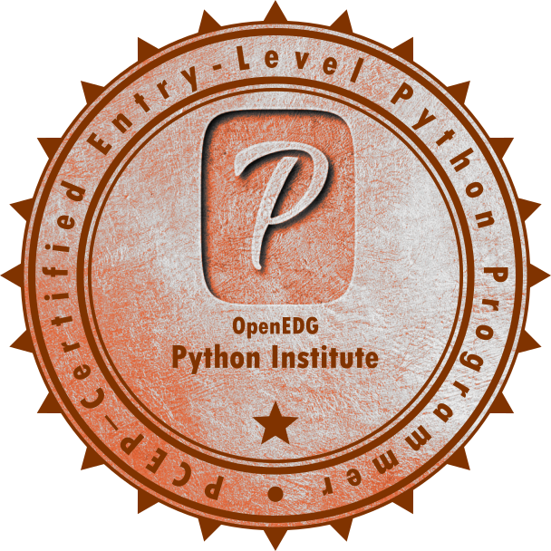

Objective
Project Development Ingenieer
Experience
2023-Present
IT Internship at DHL Express México, project management in C+ certification in México.
2023-July
Internship at DHL Express México, Analyst of Compensation and Benefits.
2019
LIKS Robotics Club-Robotics classes at Adolfo López Mateos Telesecundaria, project by the Paris-Mexico Training Center, A.C.
Education
2018-Present
Tecnológico de Monterrey, Mexico State Campus
Engineering in Digital Systems and Robotics, graduation in June 2024.
Certifications
2018-Present
PCEP-Certified Entry-Level Python Programmer-
https://www.credly.com/badges/ef80a8e5-f158-49a6-978c-6d087449084b/public_url
TOEFL ITP 550 puntos
Personal Data
- English-Advanced B2
- German Basic
- Microsoft Office-Intermediate
- G Apps - Intermediate
- Quartus II-Basic
- Python - Basic
- Java - Basic
- VHDL - Basic
- Multi-SIM - Basic
- Wolfram Mathematica - Basic
- UNIX Operating System - Intermediate